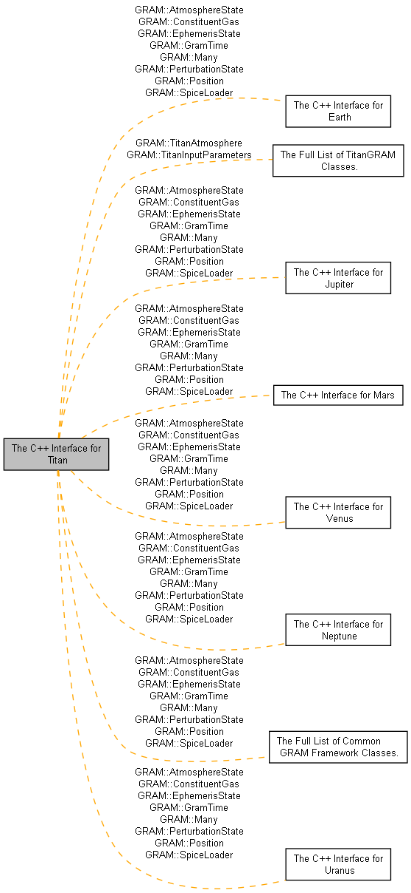

|
The GRAM Programmer's Manual
|
Class references for the TitanGRAM interface. More...

Classes | |
| class | GRAM::AtmosphereState |
| The output state of an Atmosphere model. More... | |
| class | GRAM::ConstituentGas |
| The output state of an Atmosphere model. More... | |
| class | GRAM::EphemerisState |
| The current ephemeris values. More... | |
| class | GRAM::GramTime |
| This class stores time and manages time conversions. More... | |
| class | GRAM::Many |
| This is a utility class for storing variant data types with one class. More... | |
| class | GRAM::PerturbationState |
| Contains the randomized values of a perturbation. More... | |
| class | GRAM::Position |
| An input state for an Atmosphere model. More... | |
| class | GRAM::SpiceLoader |
| This is a utility class for loading Spice data files into memory. More... | |
| class | GRAM::TitanAtmosphere |
| The main Titan Atmosphere class. More... | |
| class | GRAM::TitanInputParameters |
| Titan input parameters. More... | |
Class references for the TitanGRAM interface.
These are the classes needed for building an application that interfaces with TitanGRAM. The interface for Titan is declared in the following:
An example using this class can be found here.
1.8.17